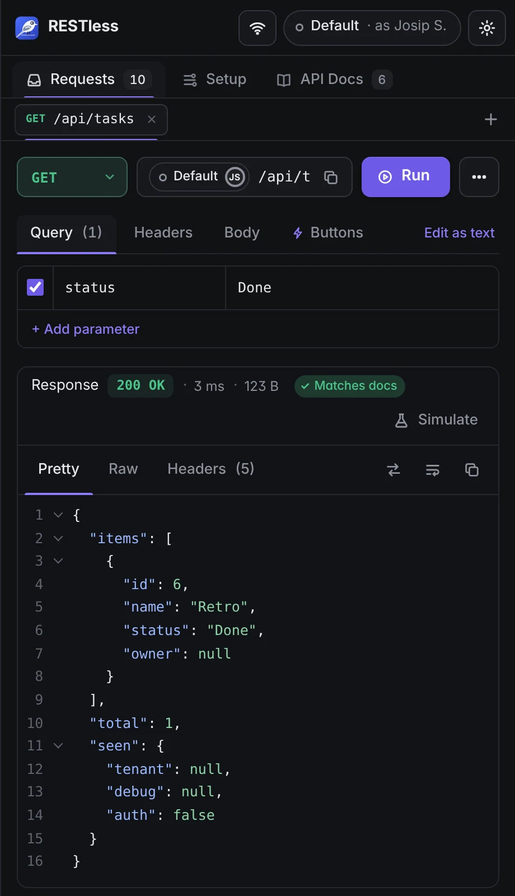
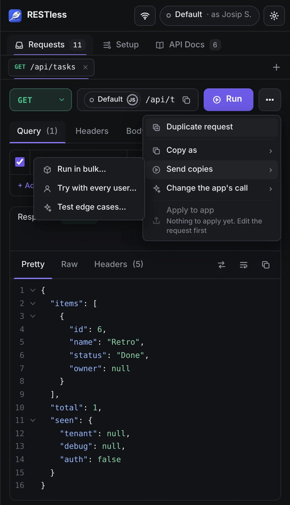
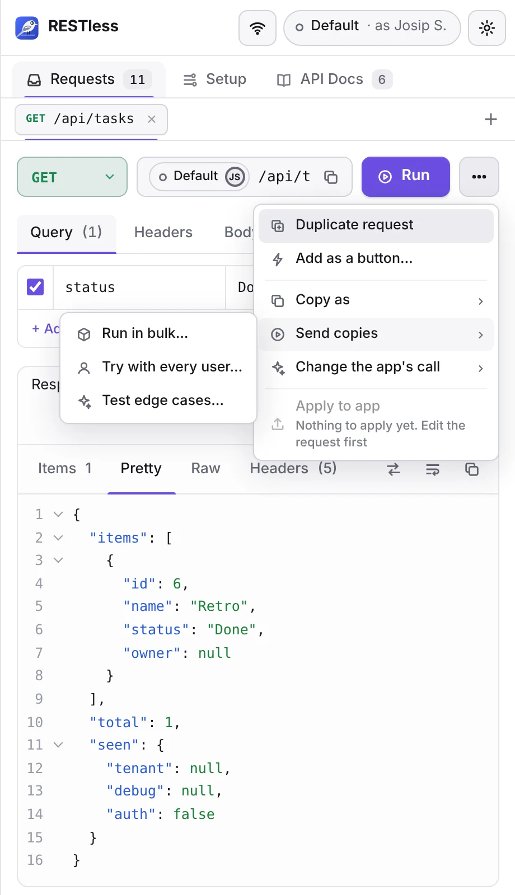
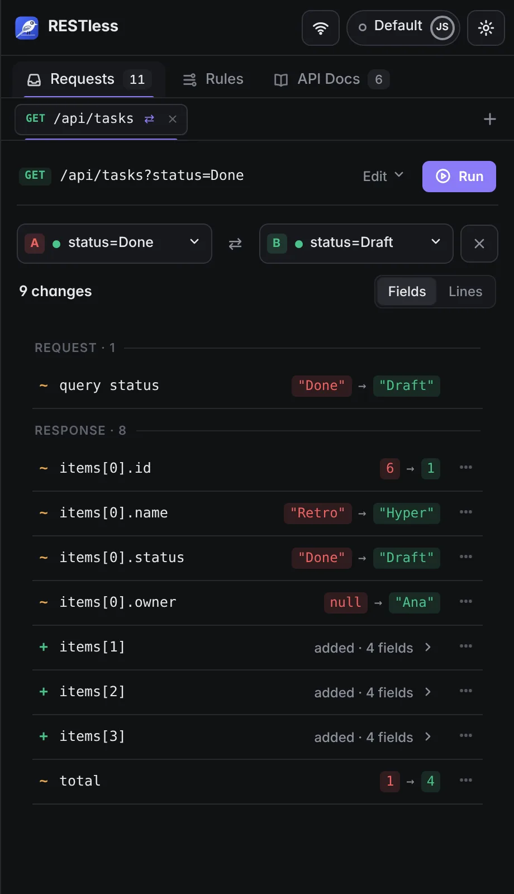
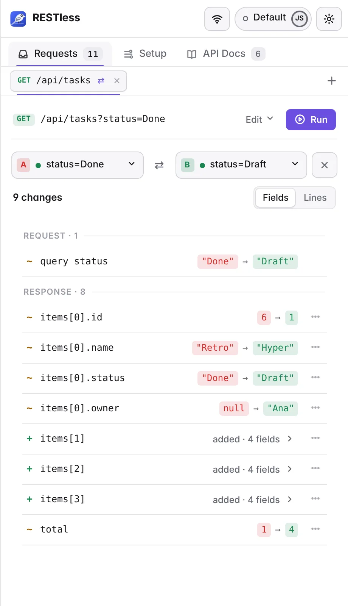

The request screen
Change any call and send it again, compare answers, or make the app see something else.




Edit and run
Change the method, path, query, headers or body, then press Run. Only you see the answer; the app isn’t affected.
Hover a JSON line to copy its Value or Key + value. Paste a "key": value into a body and it lands formatted, commas included.
Want the app to use your change? ⋯ → Apply to app (or Save ▾ → Save and apply to app) makes it repeat the call: it re-runs the button or field that made it, or reloads the page for calls made while loading. The menu says which.
Compare
Compare ▾ puts two answers side by side: the previous call, your run, or the same request on another environment. You see only what changed.


Simulate
Give the app a different answer without touching the server: an edited response, an error, a network failure or no response. Use it for every call or just the next one.


Pause a call
⋯ → Change the app's call → Break on next call. When the app makes it, the call waits for you: Continue (with your edits), Send unchanged or Drop.
Also in ⋯
Copy as cURL, fetch or TypeScript · Duplicate · Run in bulk · Try with every user · Test edge cases